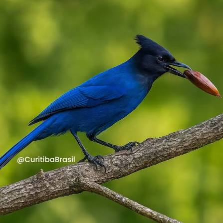
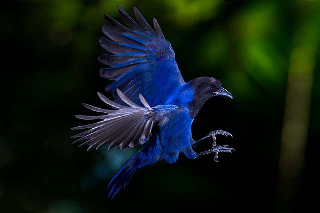
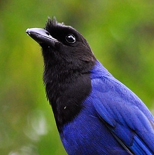

Taxonomia e Classificação Reino: Animalia Filo: Chordata Classe: Aves Ordem: Passeriformes Família: Corvidae Gênero: Cyanocorax Espécie: C. caeruleus Morfologia e Características Físicas Tamanho: Mede entre 38 e 40 cm de comprimento e pesa cerca de 200g. Plumagem: Apresenta um tom azul-cobalto intenso cobrindo a maior parte do corpo. A cabeça, a parte frontal do pescoço e o peito superior são pretos, criando um forte contraste. Bico e Patas: Possui bico forte, levemente curvado e pernas pretas e resistentes. Dimorfismo Sexual: Não há diferenças visíveis entre machos e fêmeas a olho nu (monomórficas). Distribuição Geográfica e Habitat Ocorrência: Encontrada principalmente na Região Sul do Brasil (Paraná, Santa Catarina e Rio Grande do Sul), estendendo-se ao sul de São Paulo e em áreas adjacentes da Argentina e do Paraguai. Ecossistema: Associada diretamente à Floresta Ombrófila Mista (Mata de Araucárias) e a formações de Mata Atlântica. Comportamento e Hábitos Organização Social: Vive em bandos hierárquicos de 4 a 15 indivíduos. O grupo se mobiliza junto para defender território e buscar alimento. Comunicação: É extremamente vocal. Possui um repertório complexo de gritos e chamados para alertar sobre predadores ou organizar o grupo. Reprodução: A época reprodutiva ocorre entre outubro e março. O ninho é feito de gravetos em copas de árvores altas (especialmente araucárias). A fêmea põe entre 3 e 5 ovos, que são incubados por cerca de 18 dias. O grupo auxilia na proteção do ninho e alimentação dos filhotes.


